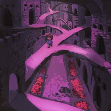
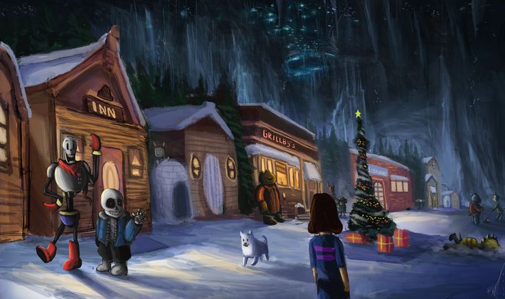
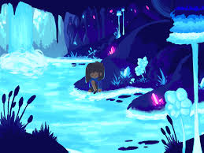
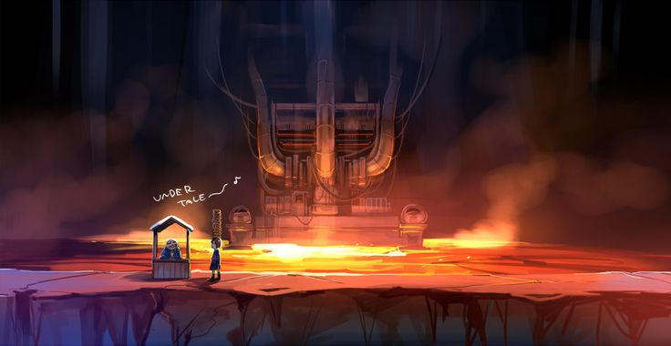
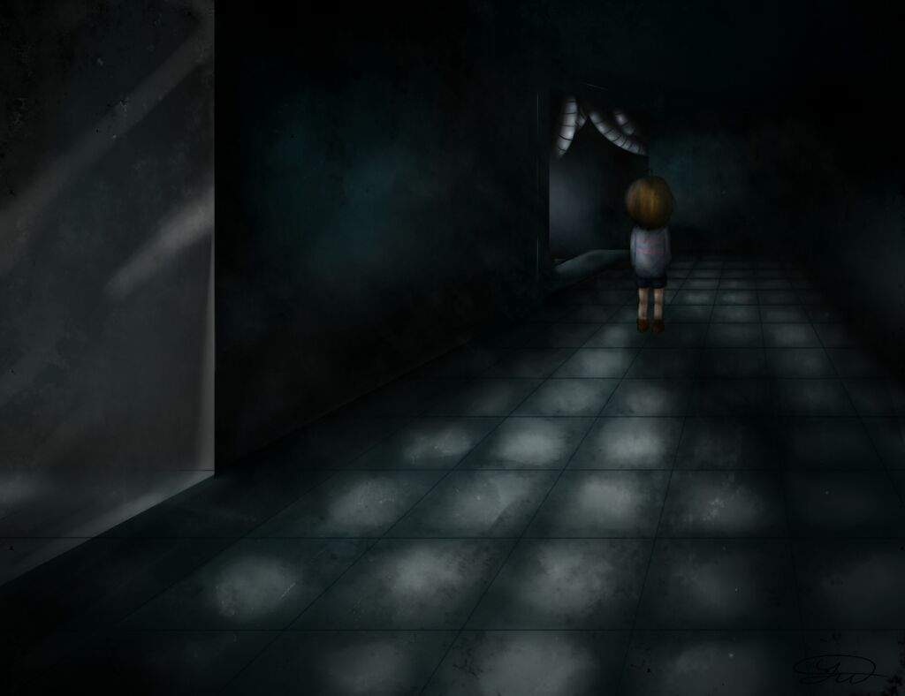
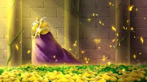

| Mundo | Foto |
|---|---|
|
Ruinas
Primera zona del juego donde Frisk despierta tras caer al subsuelo. Las Ruinas son un lugar pacifico
y seguro, lleno de puzzles y personajes amigables como Toriel y Napstablook. El jugador aprende las
mecanicas basicas del juego y comienza su aventura en el underground.

|
|
|
SnowDin
Es un pueblo cubierto de nieve y hielo, habitado por personajes como Sans y Papyrus. Snowdin es un
lugar alegre y divertido, lleno de actividades invernales y festividades. Se puede interactuar con
los habitantes y enfrentarse a desafios relacionados con el hielo y la nieve.
|
 |
|
WaterFall
Es una zona llena de cascadas y rios. WawetFall es un lugar lleno de vida y naturaleza, con hermosos
paisajes y sonidos relajantes. Frisk puede explorar la zona, enfrentarse a desafios acuaticos y
descubrir secretos ocultos entre las cascadas.
|
 |
|
HotLand
Es una zona llena de lava y de un calor abrasador. Se puede encontrar el laboratio de Alphys, la
tienda de Muffet y 💧☜☝🕆✋👎⚐☼☜💧 👎☜ ☝✌💧❄☜☼ si se tiene suerte. Es la entrada hacia el nucleo del
underground.
|
 |
|
Laboratorio Real
Para algunos, la zona más perturbadora y oscura de todo el juego. Aqui nos encontramos con los
experimentos de Alphys con la Determinación y los monstruos. El laboratorio es un lugar lleno de
tecnologia avanzada y experimentos cientificos, con pasillos oscuros y habitaciones llenas de
maquinaria extraña.
|
 |
|
Castillo Real
Es un lugar pacifico y solitario donde se nos revela la historia de la familia Dreemurr. El castillo
es un lugar majestuoso y lleno de secretos, con hermosos jardines y habitaciones lujosas. A pesar de
su apariencia tranquila, el castillo oculta oscuros secretos relacionados con la historia de los
monstruos y la barrera que los mantiene atrapados en el subsuelo.
|
 |